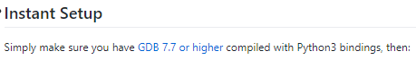
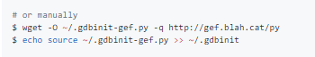
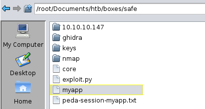
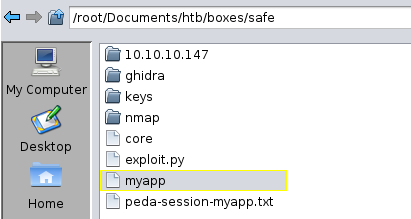
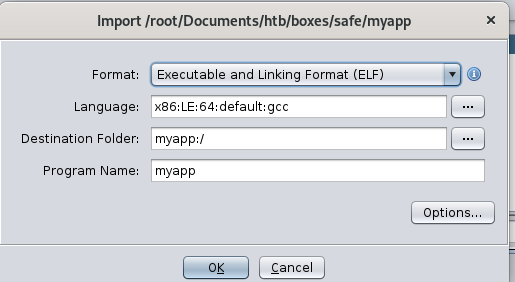
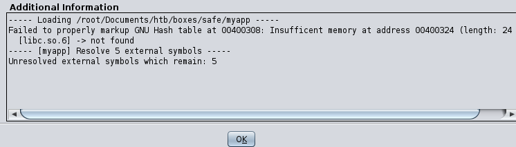
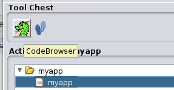
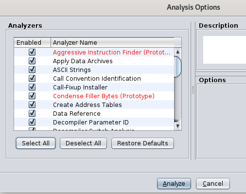

- nmapAutomator
- http
- initial foothold
- ghidra
- buffer overflow
- privilege escalation
- user/root
- lessons learned
initial foothold
we're going to use a combination of ghidra Software Reverse Engineering Framework and GDB Enhanced Features (GEF) to analyze myapp for vulnerabilitiesyou can grab ghidra releases from the official NSA github page here
to install GEF, first we'll need cmake since it is a dependency
sudo apt-get install cmake
then google gef github here
and follow the instant setup section of the README file

wget -O ~/.gdbinit-gef.py -q http://gef.blah.cat/py
echo source ~/.gdbinit-gef.py >> ~/.gdbinit

to fire up ghidra, navigate to the directory you cloned it in and execute ./ghidrarun

make a new project (and a new directory ghidra in your safe directory to hold it)

next, import the myapp file
 
click OK and make not ghidra knows the file is an ELF file

OK through the import summary


finally click the dragon icon to load it into ghidra
you may need to go navigate to file->open->myapp as well after ghidra runs if you see no programs in ghidra initially

finally, click the select all bujtton on the analysis options page and you're good to go!
